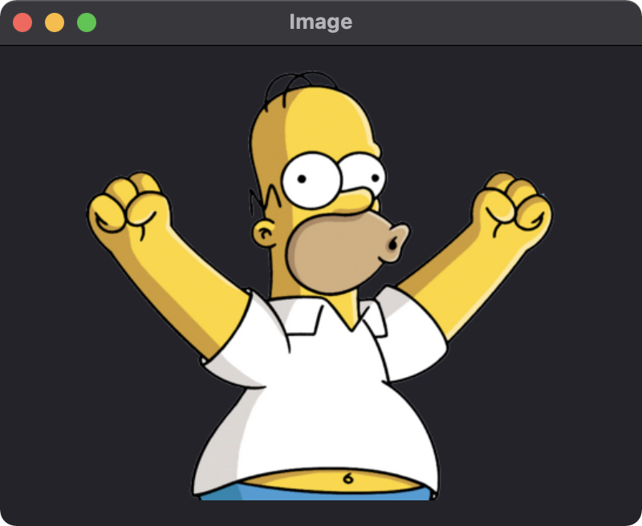
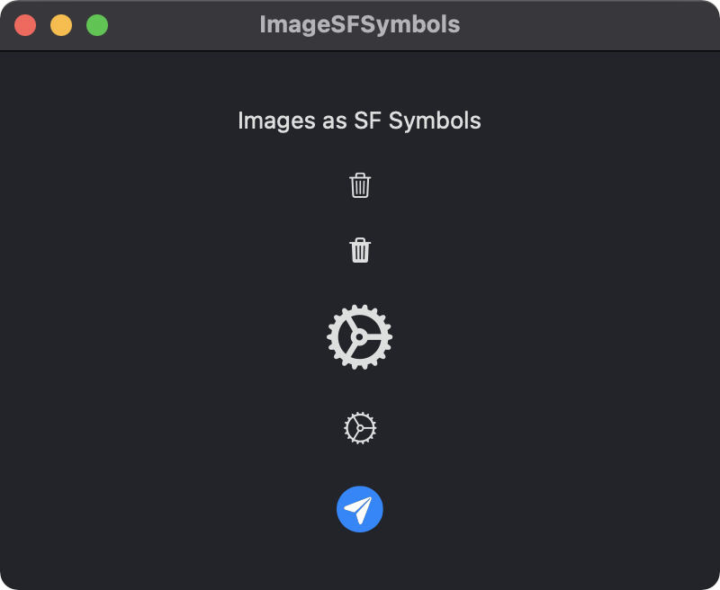
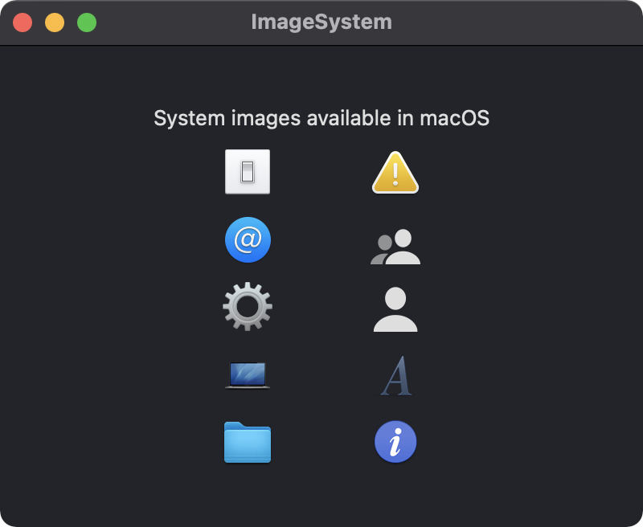

An Image view is used to display an image. For the example below, an image named "homer" is added to the Assets catalog then the image is displayed in the window while preserving its aspect ratio.

import SwiftUI
struct ContentView: View {
var body: some View {
VStack {
Image("homer")
.resizable()
.aspectRatio(contentMode: .fit)
}
.padding()
.frame(width: 400, height: 300)
}
}
Images can also be created using the system name of an SF Symbol. Use the SF Symbols app to look up the names of the available system images.

import SwiftUI
struct ContentView: View {
var body: some View {
VStack(spacing: 20) {
Text("Images as SF Symbols")
Image(systemName: "trash")
Image(systemName: "trash.fill")
Image(systemName: "gear")
.font(.system(size: 32, weight: .bold))
Image(systemName: "gear")
.imageScale(.large)
Image(systemName: "paperplane.circle.fill")
.renderingMode(.original).font(.largeTitle)
}
.frame(width: 400, height: 300)
}
}
Named images specific to macOS can be displayed using the appropriate NSImage.Name string. See Apple's documentation for a list of the available system image names.

import SwiftUI
struct ContentView: View {
let prefs = NSImage(named: NSImage.preferencesGeneralName)!
let user = NSImage(named: NSImage.userAccountsName)!
let advanced = NSImage(named: NSImage.advancedName)!
let computer = NSImage(named: NSImage.computerName)!
let folder = NSImage(named: NSImage.folderName)!
let caution = NSImage(named: NSImage.cautionName)!
let group = NSImage(named: NSImage.userGroupName)!
let guest = NSImage(named: NSImage.userGuestName)!
let font = NSImage(named: NSImage.fontPanelName)!
let info = NSImage(named: NSImage.infoName)!
var body: some View {
VStack {
Text("System images available in macOS")
HStack(spacing: 60) {
VStack(spacing: 10) {
Image(nsImage: prefs)
Image(nsImage: user)
Image(nsImage: advanced)
Image(nsImage: computer)
Image(nsImage: folder)
}
VStack(spacing: 10) {
Image(nsImage: caution)
Image(nsImage: group)
Image(nsImage: guest)
Image(nsImage: font)
Image(nsImage: info)
}
}
}
.frame(width: 400, height: 300)
}
}
Swift Programming for macOS © 2025
Built with Genja by Gavin Wiggins